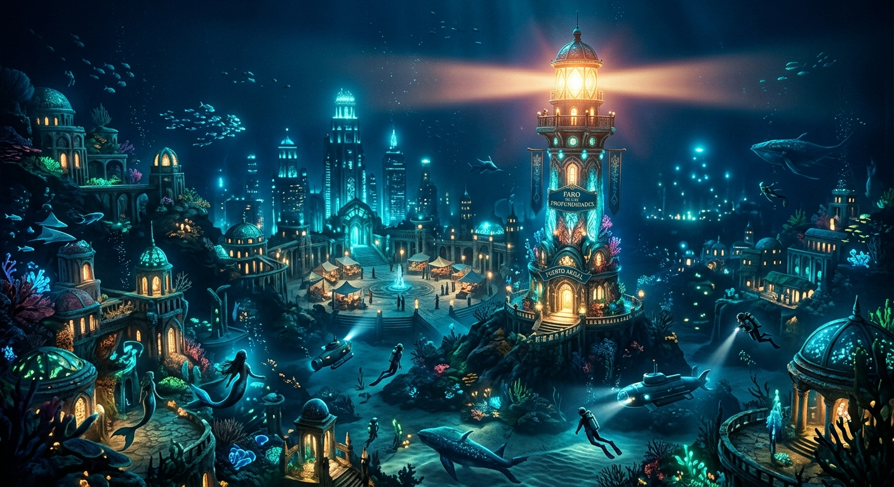

Faro de las Profundidades
El Faro de las Profundidades es uno de los símbolos más importantes de Puerto Abisal. Fue construido para orientar a los barcos que ingresan a la bahía.
- Ubicación: Acantilados Del Norte.
- ¿Qué se puede hacer?
- Los visitantes pueden recorrer el faro, observar la bahía desde su mirador y conocer su historia.
- ¿Por qué visitarlo?
- Es un lugar ideal para disfrutar de las vistas panorámicas de la ciudad y del océano.